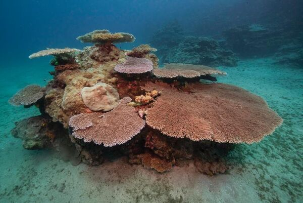
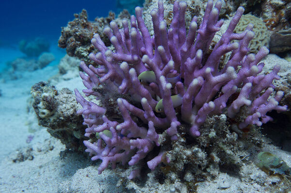
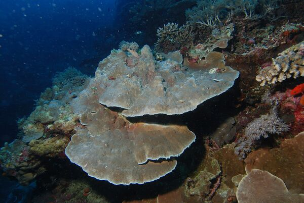
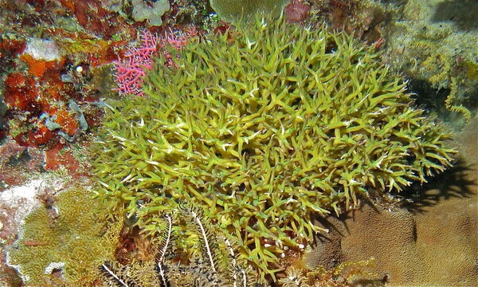
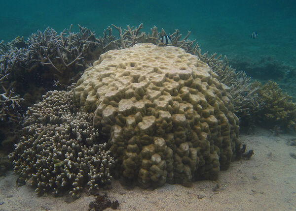
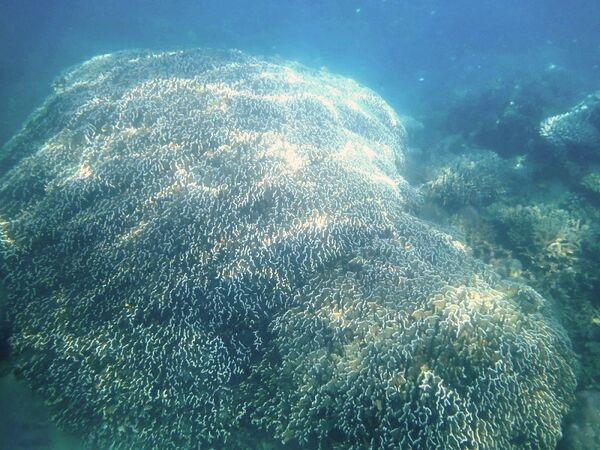
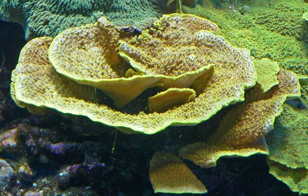
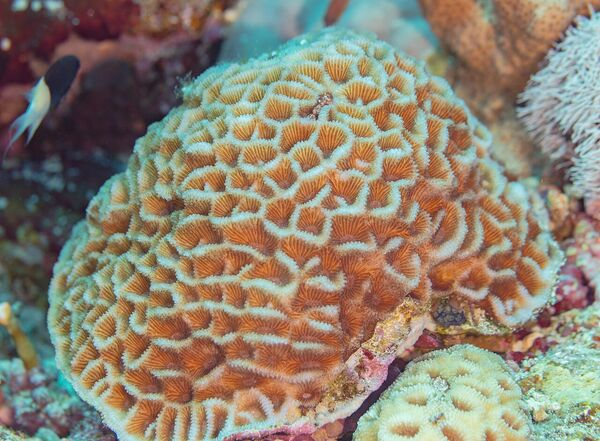
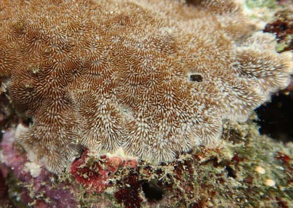

Coral Species Guide サンゴ種別ガイド
Not all corals respond equally to thermal stress. Learn to identify the "canaries" that bleach first and the resilient species that survive. すべてのサンゴが熱ストレスに同じ反応をするわけではありません。最初に白化する「カナリア」と、生き残る耐性種を見分けましょう。
●
Vulnerable
脆弱種

Table Coral
ミドリイシ
Acropora
First to bleach, first to recover. Thin tissue makes them the "canary in the coal mine."
最初に白化し、最初に回復する。薄い組織が「炭鉱のカナリア」たる所以。

Cauliflower Coral
ハナヤサイサンゴ
Pocillopora
Fast-growing branching coral. Response varies by region.
成長が速い枝状サンゴ。白化応答は地域差がある。

Hood Coral
ショウガサンゴ
Stylophora
Rounded branch tips. Sensitive to both heat and cold.
丸い枝先が特徴。高温・低温の両方に弱い。

Plate Coral
コモンサンゴ
Montipora
Thin plate-like colonies. Often bleaches with Acropora.
薄い板状群体。ミドリイシと共に白化しやすい。

Needle Coral
トゲサンゴ
Seriatopora
Delicate needle-like branches. Very fragile.
針のように細い枝。非常に繊細な構造。
●
Resistant
耐性種

Boulder Coral
ハマサンゴ
Porites
Thick tissue buffers stress. If this bleaches, the reef is in serious trouble.
厚い組織がストレスを緩衝。これが白化したら深刻。

Blue Coral
アオサンゴ
Heliopora coerulea
Living fossil with blue skeleton. High thermal tolerance.
青い骨格を持つ生きた化石。熱耐性が高い。

Scroll Coral
スリバチサンゴ
Turbinaria
Scroll-shaped plates. Tolerates turbid waters.
渦巻き状の葉状群体。濁った水にも耐える。

Brain Coral
カメノコキクメイシ
Goniastrea
Dense honeycomb structure. Slow-growing but persistent.
密なハニカム構造。成長は遅いが粘り強い。

Cactus Coral
シコロサンゴ
Pavona
Encrusting to foliose. Adapts to various conditions.
被覆～葉状。様々な環境に適応する。
Photos: Wikimedia Commons (CC BY-SA). See individual image pages for attribution.
写真: Wikimedia Commons (CC BY-SA)。帰属表示は各画像ページを参照。